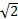

>>> b = 17.0 # le séparateur décimal est un point (et non une virgule)
>>> print(b) 
>>> print(type(b))
>>> c = 14.0/3.0
>>> print(c)
>>> c = 14.0//3.0 # division entière
>>> print(c)
Attention: il faut éviter de faire des divisions entières sur des nombres négatifs
>>> print(7//3)
>>> print(-7//3)
Attention : avec des nombres entiers, l'opérateur / fait une division classique et retourne toujours un type float :
>>> c = 12/3
>>> print(c)
Notation scientifique :
>>> a = -1.784892e4
>>> print(a)
Entre deux nombres donnés, par exemple entre 1 et 4, ou entre 3,5 et 3,6 ou entre – 10,36 et – 10,34… il existe une infinité d’autres nombres. Certaines sont des entiers, comme 2 ou 3, certains sont des décimaux comme 1,5 ou 2,3, d’autres sont des rationnels comme 4/3, d’autres sont des irrationnels comme .
Nous allons voir qu’en machine, certains nombres sont stockés de manière exacte et d’autre de manière approchée.
Expliquer pourquoi le résultat n’est pas celui attendu
On peut tester l’égalité de 0,1 + 0,2 avec 0,3
>>> print (0.1+0.2 == 0.3)
Il faut éviter de tester l’égalité de deux flottants.
• La fonction « float() » permet de convertir un entier en flottant.
>>> print (float(5))
• La fonction « int()» permet de convertir un flottant en entier.
>>> print (int(4.8))
À tester avec des nombres positifs ou négatifs pour voir comment la valeur est obtenue (tronquée ? arrondie ?).
La fonction « print ()» permet d’afficher des flottants en indiquant le nombre de chiffres à afficher après la virgule à l’aide de la chaîne "%.2f" %x dans laquelle le nombre devant f donne le nombre de décimales et x est le nombre à afficher.
>>> x = 0.123456
>>> print(x)
>>> print("%.2f" %x)
• Il faut être prudent avec les arrondis.
>>> print("%.2f" %0.1)
>>> print("%.20f" %0.1)
>>> print("%.20f" %0.125)
>>> print(1.2*3)
Créé avec HelpNDoc Personal Edition: Générateur complet de livres électroniques ePub